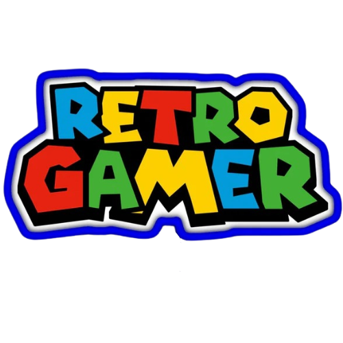
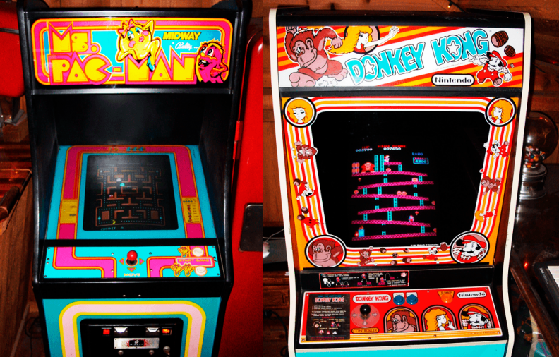
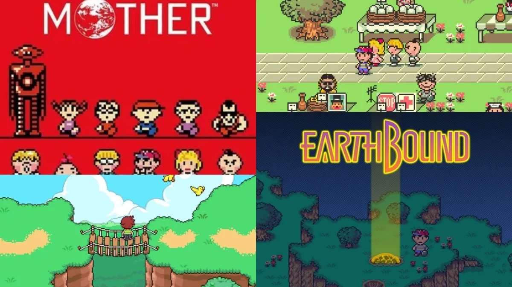
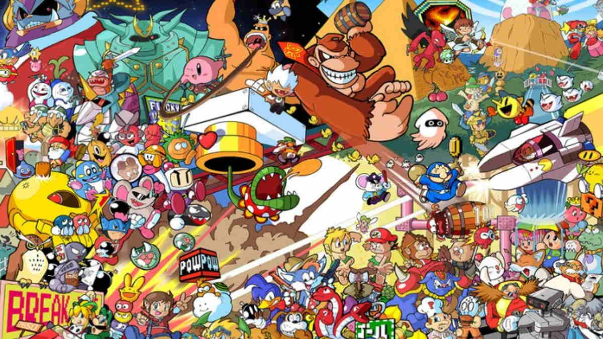
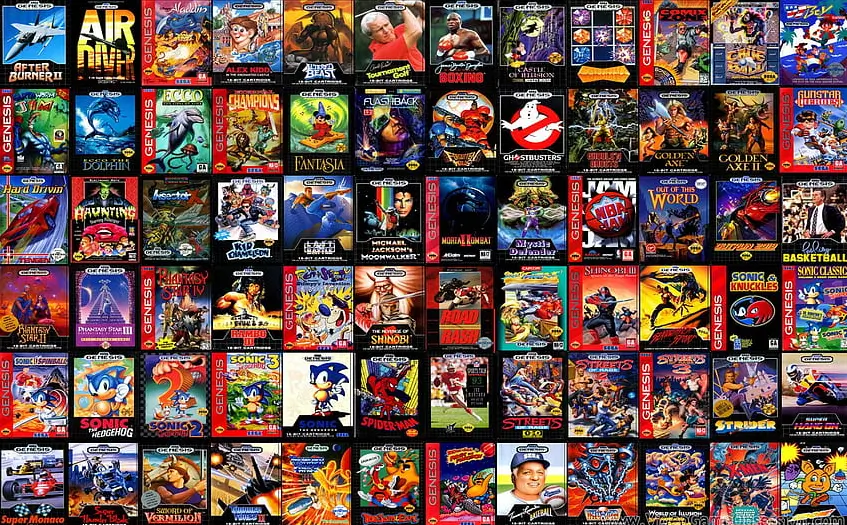

Critical RetroGamer
Bienvenido al mundo de lo RetroGamer.
Prepárate para recordar, redescubrir o descubrir por primera vez lo que hizo grande a la historia del videojuego.
Porque ser retrogamer no es mirar atrás… es traer el pasado al presente con orgullo y pasión.
Retrogamer es más que una afición: es una forma de rendir homenaje...



